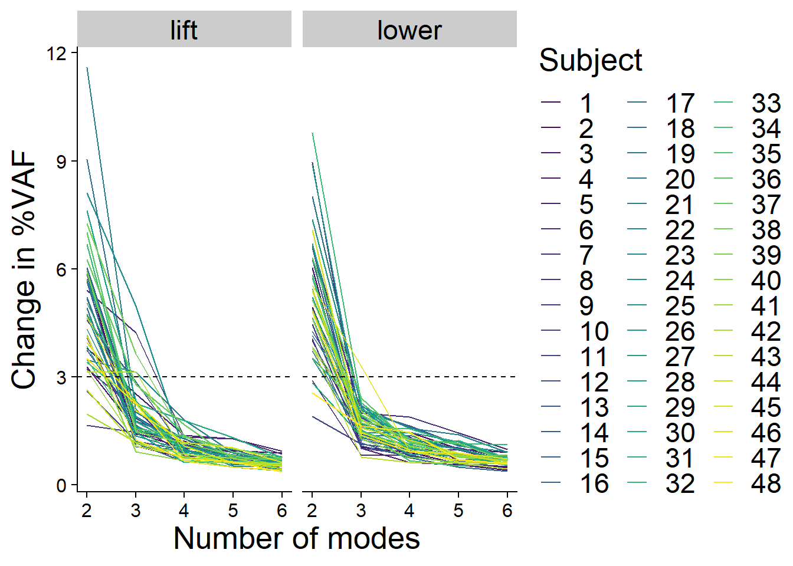
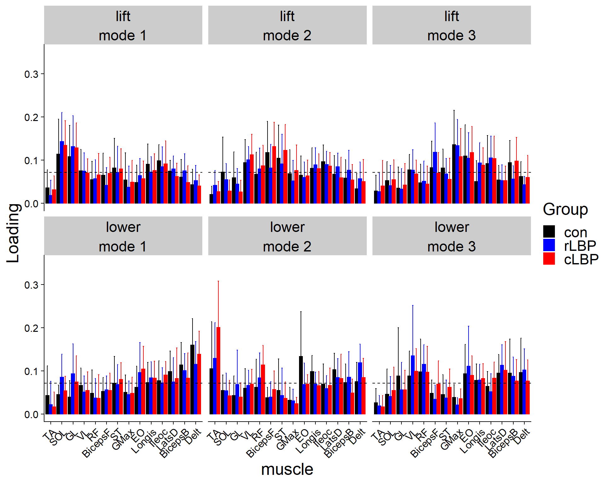
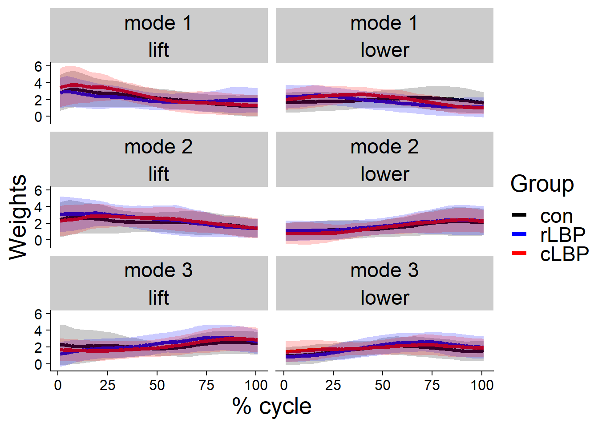

Last updated: 2020-06-09
Checks: 7 0
Knit directory: 2020_lowbackpain_ucm_lifting/
This reproducible R Markdown analysis was created with workflowr (version 1.6.1). The Checks tab describes the reproducibility checks that were applied when the results were created. The Past versions tab lists the development history.
Great! Since the R Markdown file has been committed to the Git repository, you know the exact version of the code that produced these results.
Great job! The global environment was empty. Objects defined in the global environment can affect the analysis in your R Markdown file in unknown ways. For reproduciblity it’s best to always run the code in an empty environment.
The command set.seed(20200609) was run prior to running the code in the R Markdown file. Setting a seed ensures that any results that rely on randomness, e.g. subsampling or permutations, are reproducible.
Great job! Recording the operating system, R version, and package versions is critical for reproducibility.
Nice! There were no cached chunks for this analysis, so you can be confident that you successfully produced the results during this run.
Great job! Using relative paths to the files within your workflowr project makes it easier to run your code on other machines.
Great! You are using Git for version control. Tracking code development and connecting the code version to the results is critical for reproducibility.
The results in this page were generated with repository version e2f1c9b. See the Past versions tab to see a history of the changes made to the R Markdown and HTML files.
Note that you need to be careful to ensure that all relevant files for the analysis have been committed to Git prior to generating the results (you can use wflow_publish or wflow_git_commit). workflowr only checks the R Markdown file, but you know if there are other scripts or data files that it depends on. Below is the status of the Git repository when the results were generated:
Ignored files:
Ignored: .Rhistory
Ignored: .Rproj.user/
Untracked files:
Untracked: code/linearize_pred.R
Untracked: code/measures_johnson.R
Untracked: code/plot_goal_fitted.R
Untracked: code/plot_goal_proj.R
Untracked: code/split_displ.R
Untracked: code/ucm4.R
Untracked: figure/
Untracked: output/augment.RDS
Untracked: output/coefs.RDS
Untracked: output/emg_dat.RDS
Untracked: output/glance.RDS
Untracked: output/kinem_dat.RDS
Untracked: output/kinem_list.RDS
Untracked: output/lift_ln.rds
Untracked: output/lower_ln.rds
Untracked: output/nmf_h.RDS
Untracked: output/nmf_ordered.RDS
Untracked: output/nmf_res.RDS
Untracked: output/nmf_w.RDS
Untracked: output/suppl_plot.RDS
Untracked: output/synergy_displ.RDS
Untracked: output/ucm_df.RDS
Untracked: output/ucm_df_cat.RDS
Untracked: output/ucm_result_multvar.RDS
Untracked: output/ucm_result_univar.RDS
Untracked: output/xtrast.RDS
Note that any generated files, e.g. HTML, png, CSS, etc., are not included in this status report because it is ok for generated content to have uncommitted changes.
These are the previous versions of the repository in which changes were made to the R Markdown (analysis/1-NMF_analysis.Rmd) and HTML (docs/1-NMF_analysis.html) files. If you’ve configured a remote Git repository (see ?wflow_git_remote), click on the hyperlinks in the table below to view the files as they were in that past version.
| File | Version | Author | Date | Message |
|---|---|---|---|---|
| Rmd | e2f1c9b | bernard-liew | 2020-06-09 | Added UCM codes and plots |
# Clear workspace
rm (list = ls ())
# Helper packages
library (tidyverse)
library (doParallel)
library (magrittr)
library (broom)
# Plotting
library (cowplot)
library("viridis")
# Statistics
library (NMF)
library (pracma)
library (emmeans)
library (mgcv)
library (pammtools)
library (lme4)
# Custom functions
source ("code/ucm4.R")output <- "output"
# original emg data
df.mat <- readRDS("output/emg_dat.RDS")
displ <- readRDS("output/kinem_dat.RDS")
ms.ord <- c("msTA", "msSOL", "msGL", "msVL", "msRF", "msBicepsF", "msST", "msGMax",
"msEO" , "msLongis" ,"msIleoc" , "msLatsD" ,"msBicepsB" ,"msDelt")
phase.ord <- c("lift_ln", "lower_ln")###################### Standard nmf ################################
nmf_done <- TRUE
if (nmf_done == FALSE) {
# do NMF
doParallel::registerDoParallel(7)
# do for each lifting phase and safe separately
for (n in seq_along(phase.ord)) {
nmf_dat <- df.mat[[n]]
nsubj <- length (nmf_dat)
############### Iterate over 6 factors ########################
syn <-
foreach (m = 1:6) %:% # synergy max number = 6
foreach (p = 1: nsubj) %dopar%{
NMF::nmf (nmf_dat [[p]], rank = m, method = "lee")
}
saveRDS(syn, file = file.path("output", paste0(phase.ord[n], ".rds")))
}
# read in NMF of each lift phase and merge
list_nmf <- list()
for (n in seq_along(phase.ord)) {
list_nmf[[n]] <- readRDS(file = file.path("output", paste0(phase.ord[n], ".rds")))
}
for (n in seq_along(phase.ord)) {
for (m in 1:6) {
names (list_nmf[[n]][[m]]) <- names (df.mat[[n]])
}
}
names (list_nmf) <- phase.ord
# save merged nmf results
saveRDS(list_nmf, "output/nmf_res.RDS")
} else {
list_nmf <- readRDS("output/nmf_res.RDS")
}###################### Calculate vaf################################
vaf_list <- list ()
vaf_list2 <- list ()
nsubj <- map_dbl(df.mat, length)
for (n in seq_along(phase.ord)) {
df <- list_nmf[[n]]
targ <- df.mat[[n]]
for (m in 1:6) {
vaf <- pmap (list (object = df[[m]],target = targ),evar)
vaf_list2 [[m]] <- vaf
}
vaf_list [[n]] <- vaf_list2
}
vaf_df <- list()
for (n in seq_along(phase.ord)) {
temp <- map (vaf_list[[n]], unlist)
names (temp) = paste0("comp", c(1:6))
temp <- bind_rows(temp)
temp$subj <- c (1:nsubj[n])
vaf_df[[n]] <- temp
}
names (vaf_df) <- phase.ord
vaf_df <- bind_rows(vaf_df, .id = "task")# Increment in VAF per factor
comp <- vaf_df %>%
gather (c(comp1:comp6), key = syn_no, value = vaf) %>%
mutate (syn_no = str_remove(syn_no, "comp") %>% as.numeric) %>%
arrange(task, subj, syn_no ) %>%
group_by(task, subj) %>%
mutate(vaf_lag = dplyr::lag (vaf, n = 1, default = NA),
vaf_diff = (vaf - vaf_lag)*100) %>%
ungroup () %>%
mutate (task = str_remove (task, "_ln"),
Subject = factor (subj)) %>%
na.omit() %>%
ungroup ()
c <- comp %>%
ggplot (aes(x = syn_no, y = vaf_diff, color = Subject), size = 1) +
geom_line() +
scale_colour_viridis(discrete = TRUE, option = "D")+
facet_wrap(~task) +
ylab ("Change in %VAF") +
xlab ("Number of modes") +
theme_half_open() +
theme(text = element_text(size=20)) +
geom_hline(aes (yintercept = 3), linetype = 2)
c
# tiff("./../../fig/1_w_plot.tiff", width = 20, height = 10, units = 'in', res = 200, compression = 'none')
# w.plot
# dev.off()nmf_order_done <- TRUE
comp_no <- 3 # number of synergies
if (nmf_order_done == FALSE) {
list_nmf_final <- list()
# select synergy number
for (n in seq_along(phase.ord)) {
list_nmf_final[[n]] <- list_nmf[[n]][[comp_no]]
}
################### Order synergies #############################
set.seed(123)
ref_list = list()
for (n in seq_along(phase.ord)) {
con_vec <- which (grepl ("con", names (list_nmf_final[[n]])) == TRUE)
ref_list[[n]] <- sample(con_vec,1)
}
ref_list <- unlist(ref_list)
list_nmf_final_ord <- list()
for (n in seq_along(phase.ord)) {
ref <- ref_list[n]
s <- nsubj[n]
temp <- list_nmf_final[[n]]
temp.ref <- rep (temp [ref], s)
list_nmf_final_ord [[n]] <- pmap (list (syn_ref = temp.ref, syn_ext = temp) , matchSynergies)
names (list_nmf_final_ord [[n]]) <- names(temp)
}
names (list_nmf_final_ord) <- phase.ord
saveRDS (list_nmf_final_ord, "output/nmf_ordered.RDS")
} else {
list_nmf_final_ord <- readRDS ("output/nmf_ordered.RDS")
}ms.ord <- str_remove (ms.ord, "ms")
w <- map(list_nmf_final_ord, ~basis_merge(.)) %>%
map (~mutate (., muscle = rep (ms.ord, nrow(.)/length (ms.ord)))) %>%
bind_rows(.id = "task")
w$subj <- map (list_nmf_final_ord, ~ rep(names (.), each = 14)) %>% flatten_chr()
w$grp <- str_remove(w$subj, "_.*")
#### w plot ###############
phase.ord.sub <- str_remove (phase.ord, "_ln")
w.df <- w %>%
gather (c(V1:noquote(paste0("V",comp_no))), key = synergy, value = load) %>%
mutate (synergy = str_replace(synergy, "V", "mode "),
task = str_remove (task, "_ln")) %>%
mutate (muscle = factor (muscle, levels = ms.ord),
grp = factor (grp, levels = c("con", "rlbp", "clbp"), labels =c("con", "rLBP", "cLBP") ),
task = factor (task, levels = phase.ord.sub ),
synergy = factor (synergy)) %>%
group_by(task, grp, synergy, muscle) %>%
summarize (load_mean = mean (load),
load_sd = sd (load)) %>%
ungroup ()
lift_w_ave <- w.df %>%
dplyr::filter (task == "lift" & grp == "con") %>%
summarize (mean(load_mean))%>%
pull()
lower_w_ave <- w.df %>%
filter (task == "lower" & grp == "con") %>%
summarize (mean(load_mean))%>%
pull()
w.df$h_line <- rep (c(lift_w_ave, lower_w_ave), each = nrow (w.df)/2)
w.plot <- w.df %>%
ggplot () +
geom_bar(aes (x = muscle, y = load_mean, fill = grp, colour = grp), stat = "identity",
position = position_dodge(width = 0.9)) +
geom_errorbar(aes (x = muscle, ymin = load_mean, ymax = load_mean + load_sd, colour = grp), stat = "identity",
position = position_dodge(width = 0.9), width = 0.3) +
ylim(0, 0.35) +
geom_hline(aes(yintercept = h_line), linetype = "dashed") +
facet_wrap( task ~ synergy , scales = "fixed") +
ylab ("Loading") +
scale_fill_manual(values = c("black", "blue", "red")) +
scale_colour_manual(values = c("black", "blue", "red"), guide = FALSE) +
theme_half_open() +
theme(text = element_text(size=20),
axis.text.x = element_text(angle = 45, hjust = 1)) +
labs (fill = "Group")
w.plot
# tiff("./../../fig/figure 1.tiff", width = 20, height = 10, units = 'in', res = 300, compression = 'none')
# w.plot
# dev.off()h <- map(list_nmf_final_ord, ~coef_merge(.)) %>%
bind_rows(.id = "task")
h$cycle <- as.numeric (rep (c(1:101), length.out = nrow (h)))
h$rep <- rep (rep (c(1:20), each = 101), length.out = nrow (h))
h$subj<- map (list_nmf_final_ord, ~ rep(names (.), each = 101*20)) %>% flatten_chr()
h$grp <- str_remove(h$subj, "_.*")
h.df <- h %>%
gather (c(V1:noquote(paste0("V",comp_no))), key = synergy, value = load) %>%
mutate (synergy = str_replace(synergy, "V", "mode "),
cycle = as.numeric (cycle) ,
task = factor (task, levels = phase.ord),
task = str_remove (task, "_ln"),
grp = factor (grp, levels = c("con", "rlbp", "clbp"),
labels = c("con", "rLBP", "cLBP"))) %>%
group_by(grp, task, synergy, cycle) %>%
summarize (Mean = mean (load),
Sd = sd (load)) %>%
ungroup ()
h.plot <- h.df %>%
ggplot () +
geom_line(aes(x = cycle, y = Mean, colour = grp), size = 1.5) +
geom_ribbon(aes (x = cycle, ymin = Mean - Sd, ymax = Mean + Sd, fill = grp), alpha = 0.2) +
scale_color_manual(values = c("black", "blue", "red")) +
scale_fill_manual(values = c("black", "blue", "red")) +
ylab ("Weights") +
xlab ("% cycle") +
facet_wrap(synergy~task, nrow = comp_no, scales = "fixed") +
theme_half_open() +
theme(text = element_text(size=20)) +
labs (colour = "Group") +
guides (fill = FALSE)
h.plot
# tiff("./../../fig/figure 2.tiff", width = 8, height = 10, units = 'in', res = 300, compression = 'none')
# h.plot
# dev.off()syn_df <- displ %>%
inner_join(h, by = c("subj", "task", "cycle", "rep")) %>%
select (-reps, -reps2, - trial, -max_rep)
saveRDS(syn_df, "output/synergy_displ.RDS")
sessionInfo()R version 3.6.2 (2019-12-12)
Platform: x86_64-w64-mingw32/x64 (64-bit)
Running under: Windows 10 x64 (build 18363)
Matrix products: default
locale:
[1] LC_COLLATE=English_United Kingdom.1252
[2] LC_CTYPE=English_United Kingdom.1252
[3] LC_MONETARY=English_United Kingdom.1252
[4] LC_NUMERIC=C
[5] LC_TIME=English_United Kingdom.1252
attached base packages:
[1] parallel stats graphics grDevices utils datasets methods
[8] base
other attached packages:
[1] lme4_1.1-21 Matrix_1.2-18 pammtools_0.2.2 mgcv_1.8-31
[5] nlme_3.1-142 emmeans_1.4.3.01 pracma_2.2.9 NMF_0.21.0
[9] cluster_2.1.0 rngtools_1.5 pkgmaker_0.27 registry_0.5-1
[13] viridis_0.5.1 viridisLite_0.3.0 cowplot_1.0.0 broom_0.5.4
[17] magrittr_1.5 doParallel_1.0.15 iterators_1.0.12 foreach_1.4.7
[21] forcats_0.4.0 stringr_1.4.0 dplyr_0.8.4 purrr_0.3.3
[25] readr_1.3.1 tidyr_1.0.0 tibble_2.1.3 ggplot2_3.3.0
[29] tidyverse_1.3.0 workflowr_1.6.1
loaded via a namespace (and not attached):
[1] TH.data_1.0-10 minqa_1.2.4 colorspace_1.4-1
[4] ellipsis_0.3.0 rprojroot_1.3-2 estimability_1.3
[7] fs_1.3.1 rstudioapi_0.11 farver_2.0.1
[10] prodlim_2019.11.13 fansi_0.4.0 mvtnorm_1.0-11
[13] lubridate_1.7.4 xml2_1.2.2 codetools_0.2-16
[16] splines_3.6.2 knitr_1.26 zeallot_0.1.0
[19] Formula_1.2-3 jsonlite_1.6 nloptr_1.2.1
[22] gridBase_0.4-7 dbplyr_1.4.2 compiler_3.6.2
[25] httr_1.4.1 backports_1.1.5 assertthat_0.2.1
[28] lazyeval_0.2.2 cli_2.0.1 later_1.0.0
[31] htmltools_0.4.0 tools_3.6.2 coda_0.19-3
[34] gtable_0.3.0 glue_1.3.1 reshape2_1.4.3
[37] Rcpp_1.0.3 cellranger_1.1.0 vctrs_0.2.1
[40] xfun_0.11 rvest_0.3.5 lifecycle_0.1.0
[43] MASS_7.3-51.5 zoo_1.8-6 scales_1.1.0
[46] hms_0.5.2 promises_1.1.0 sandwich_2.5-1
[49] RColorBrewer_1.1-2 yaml_2.2.0 gridExtra_2.3
[52] stringi_1.4.3 checkmate_1.9.4 boot_1.3-24
[55] bibtex_0.4.2.2 lava_1.6.6 rlang_0.4.4
[58] pkgconfig_2.0.3 evaluate_0.14 lattice_0.20-38
[61] labeling_0.3 tidyselect_0.2.5 plyr_1.8.5
[64] R6_2.4.1 generics_0.0.2 multcomp_1.4-11
[67] DBI_1.1.0 pillar_1.4.3 haven_2.2.0
[70] whisker_0.4 withr_2.1.2 survival_3.1-8
[73] modelr_0.1.5 crayon_1.3.4 rmarkdown_2.0
[76] timereg_1.9.4 grid_3.6.2 readxl_1.3.1
[79] git2r_0.26.1 reprex_0.3.0 digest_0.6.23
[82] xtable_1.8-4 httpuv_1.5.2 numDeriv_2016.8-1.1
[85] pec_2019.11.03 munsell_0.5.0